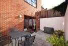

The house is equipped with a new age kitchen and two bathrooms, it also has a large living room, six bedrooms, a spacious dining area, a sun room and a cozy storage room.The building is rectangular shaped. The house is fully surrounded by a covered patio.The second floor is smaller than the first, which allowed for a roof garden on two sides of the house. This floor has roughly the same style as the floor below. The roof is flat and is covered with black roof tiles. One small chimney sits at the side of the house. There are no windows on the roof. The house itself is surrounded by a modest, childsafe garden covered mostly in grass and with a children's playground in the center.